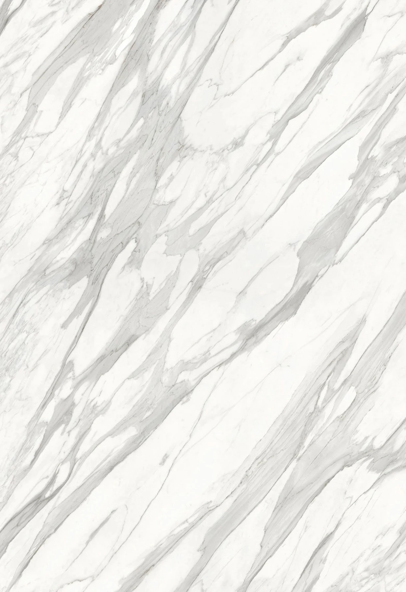
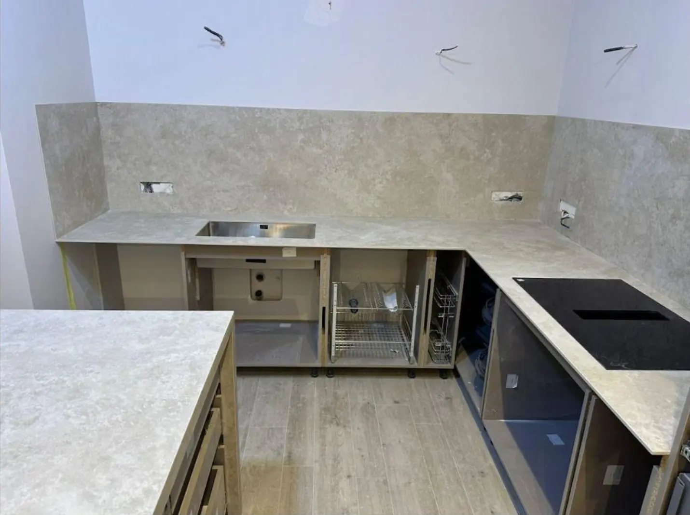

სივრცე
იწყება შეხებით.სივრცე იწყება
შეხებით.
ბუნებრივი ხასიათი. ზუსტი დამუშავება.
ქვის ზედაპირები თქვენი სივრცისთვის.

სამზარეულო / აბაზანა / ინტერიერი
LITHOS LAB / ინტერაქტიული 3D დიზაინერი
შენი იდეა.
შენი სამზარეულო.
არ გჭირდება დიზაინერის გამოცდილება. აირჩიე ფორმა, მოარგე ქვა და ნახე შენი სამზარეულო 3D-ში.
01 აირჩიე ფორმა02 შეარჩიე ქვა03 ნახე 3D-ში
დაიწყე სამზარეულოს შექმნა
დაიწყე მზა ნიმუშით — ზუსტ ზომებს მოგვიანებითაც მიუთითებ.

LITHOS-ის შესრულებული ნამუშევარი შექმენი შენი ვერსია01 / THE ATELIER
კარგი დეტალი
მთელ სივრცეს ცვლის.
მასალის შერჩევიდან აზომვამდე, დამზადებიდან მონტაჟამდე — ვქმნით ზედაპირებს, რომლებიც თქვენს იდეას ერგება.
ქვა რეალურ სივრცეში
ნამუშევრების არქივი
ყოველ ზედაპირს
თავისი ხმა აქვს.
აღმოაჩინეთ NEOLITH და კვარცი →იდეიდან დასრულებამდე
- 01კონსულტაცია
- 02მასალის შერჩევა
- 03აზომვა
- 04დამზადება
- 05მონტაჟი